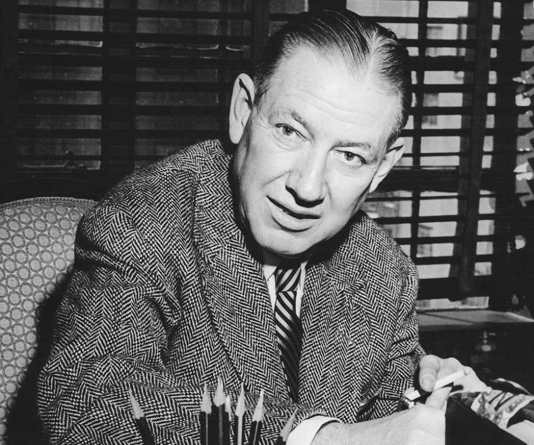
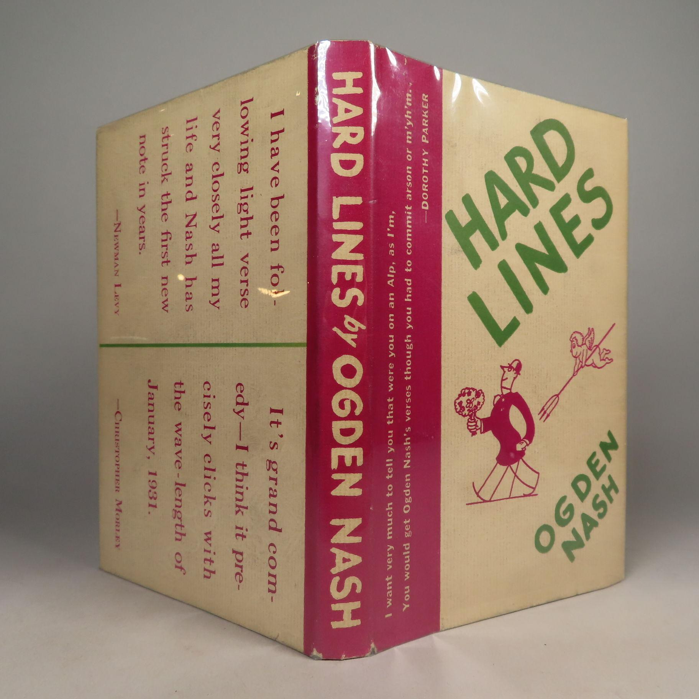

на главную
страницу << >> English main page
>> English main page
Огден
Нэш
(1902-1971)
Ogden Nash

Кобра
THE COBRA
Она надует щеки ядом
И погулять выходит садом.
И тот кто с нею спор затеет,
Тот очень скоро пропотеет.
О ГРЕХАХ
Portrait of the Artist as a Prematurely
Old Man
Это знает каждый школьник или даже бакалавр,
Что грехи бывают двух совершенно разных видов.
Первый - если ты нарушил, преступил и перебрал.
И второй, когда забыл, не услышал, не увидел.
Хочешь знать мое об этом мнение?
Тогда наберись терпения.
Не печалься о грехах, совершаемых поступком.
Если мы их совершаем, значит знаем для чего.
А печалься о грехах, одинаково преступных,
Но лишенных даже тени обаяния того.
Ты забыл застраховать жизнь жилище и машину
И ли в срок не оплатил воду, газ и телефон.
Ты наказан будешь строго, убедительно и сильно.
Это будет очень больно для тебя со всех сторон.
И в этом отсутствии всякой души
Другие тебе не друзья.
Конечно, лучше совсем не грешить.
Но если совсем нельзя?
Если надо согрешить
По закону строгих чисел,
Согреши, но соверши.
В этом есть какой-то смысл.
Very Like a Whale
Профессор
THE PURIST
Педант профессор послан за экватор
Его невесту слопал аллигатор
В чем видит он теперь свое призвание?
Дать хищнику научное название
СТАРИКИ
OLD MEN
Умирает старик. Умирает старик. Умира...
Умирает старик. Молодые дивятся не слишком.
Смерть - проблема. Ее не понять философским умишкам.
Умирает старик. И ему не дожить до утра.
Старость хуже чем смерть, как отчаянье хуже тоски.
Этот тягостный факт понимают одни старики.


Ogden Nash
1. Где и когда родился? В какой семье?
- Полное имя: Фредерик Огден Нэш.
- Дата рождения: 19 августа 1902 года.
- Место рождения: Rye.
- Родился в обеспеченной семье.
- Отец: Edmund Strudwick Nash — работал в компании, производившей импортные товары.
- Мать: Mattie Cheney Nash.
- Из-за работы отца семья часто переезжала, поэтому Нэш учился в нескольких школах.
- В Harvard University не поступал; после школы сразу начал работать.
2. Основные события жизни
- Работал учителем, затем в издательстве Doubleday.
- 1931 — выходит первый сборник стихов Hard Lines, мгновенно сделавший его знаменитым.
- В 1930–1960-х годах регулярно публикуется в журнале The New Yorker.
- Пишет тексты для театра и мюзиклов.
- Вместе с Kurt Weill создаёт музыкальную пьесу One Touch of Venus.
- Выступает с публичными чтениями своих стихов по всей Америке.
- 19 мая 1971 — умер в Baltimore.
3. Основные произведения
Сборники стихов
- Hard Lines
- I'm a Stranger Here Myself
- Good Intentions
- The Private Dining Room
- You Can't Get There from Here
Самые известные стихотворения
- The Cow
- The Panther
- The Turtle
- Reflections on Ice-Breaking
- многочисленные короткие юмористические эпиграммы о животных, семье и повседневной жизни
4. Слава при жизни и после смерти
При жизни
- Был одним из самых популярных юмористических поэтов США.
- Его книги расходились большими тиражами.
- Постоянно публиковался в ведущих американских журналах.
- Его публичные чтения собирали большие аудитории.
После смерти
- Продолжает оставаться одним из самых цитируемых американских авторов юмористических стихов.
- Многие его короткие стихотворения входят в школьные антологии.
- Его афористичные строки регулярно переиздаются и цитируются.
Краткая характеристика
- Полное имя: Фредерик Огден Нэш.
- Годы жизни: 1902–1971.
- Основные жанры: юмористическая поэзия, эпиграммы, детские стихи.
- Главные темы: повседневная жизнь, семья, животные, человеческие слабости, язык и игра слов.
- Историческое значение: один из крупнейших американских юмористических поэтов XX века. Прославился необычными рифмами, намеренно нарушал привычные размеры стиха и мастерски использовал каламбуры. Его творчество до сих пор считается образцом лёгкой, остроумной англоязычной поэзии.
© 2001 Elena and
Yakov Feldman